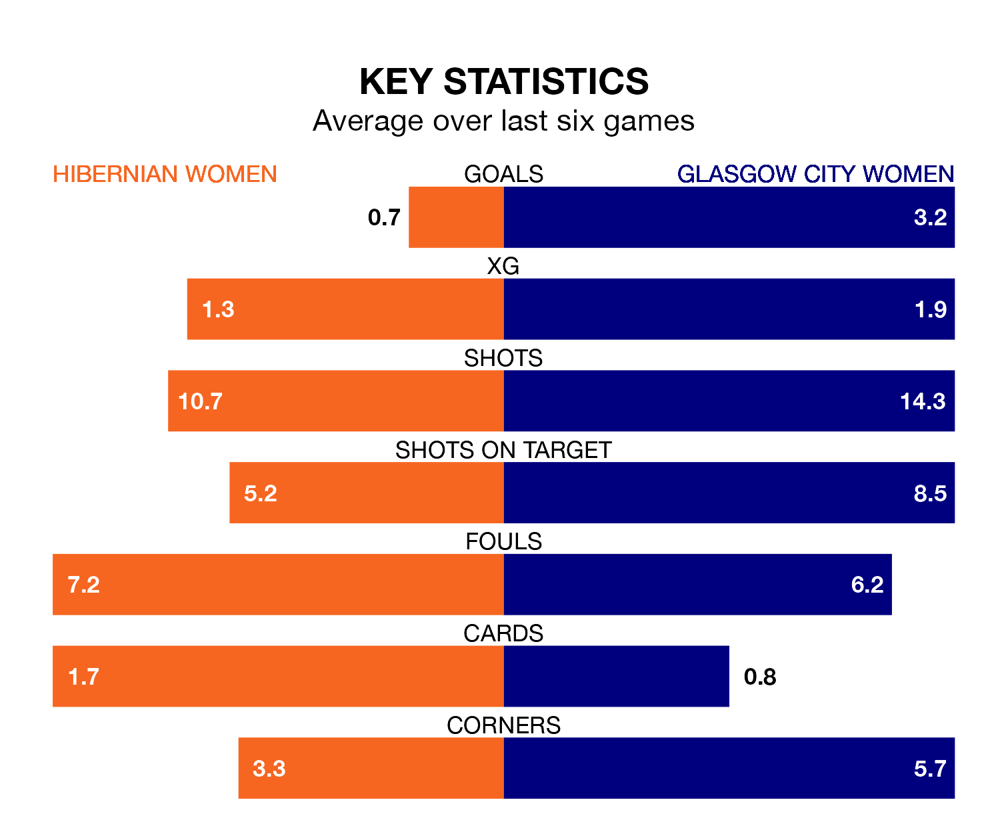

Hibernian Women welcome Glasgow City Women to the Meadowbank Stadium on Sunday lunchtime looking to pick up points to end their three-game losing streak.
Hibernian's struggles have left them with just four points from their last six SWPL 1 matches, while their opponents have earned 12 from a possible 18.
With 80 goals in 26 games so far this season, Glasgow City are the league's third-highest scorers with 3.1 goals per game. And they are conceding fewer than average, letting in 20 goals at a rate of 0.8 per game.
Hibernian are also above average scorers, with 2.4 goals per game, compared to a league average of 2.1. They have conceded 1.4 goals per game.
In Jorian Baucom, Hibs have one of the league's sharpest shooters so far this season. She has notched 21 goals in 26 appearances, to sit second in the scoring charts.
Her goal rate of one every 92 minutes is quicker than that of Lauren Davidson, the away team's top scorer with a goal every 135 minutes, and a total of 14 goals in 26 games.
In the last 10 years, Hibernian and Glasgow City have played each other on 13 occasions. Hibernian won one of them, Glasgow City 10, and they drew twice.
On average, Hibs scored 0.7 goals and Glasgow City 2.1 in those matches.
Their last meeting was on December 10, when Glasgow City won 3-1 away.
Glasgow City are third in the table after 26 games, of which they have won 20 and drawn two, earning 62 points.
The hosts are two places behind Glasgow City in fifth, with 13 wins and three draws putting them on 42 points.
Hibernian's last match was on Wednesday, a 1-0 loss against Celtic Women.
Glasgow City beat Partick Thistle Women 4-1 last time out, also on Wednesday, with Emily Whelan (two), Cori Michelle Sullivan and Wilma Forsblom on the scoresheet.
Updated: 15:40 (UTC), 18/04/24